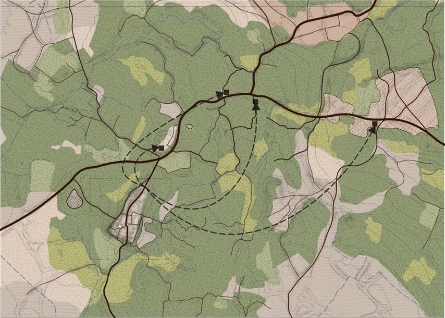
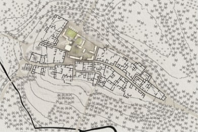
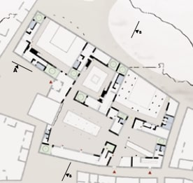

“Look before building.”
A village in the Tunisian Jérid region | raw earth architecture never previously documented. Multiple on-site survey campaigns conducted: measurements, documentary photography, interviews with former inhabitants.

Al-Arg
The ruined village that founded the conviction.
The thesis operates at three scales simultaneously: a territorial analysis of the conditions that produced the abandonment, an urban proposal for the reactivation of the village as a place of memory, culture, and temporary dwelling, and an architectural intervention on a key building within the fabric.

Territorial Site map | Al-Arg within the Jérid. Reading of the oasis territory as a system | water, road, inhabited fabric. 
Urban Site plan | rehabilitation proposal. 
Architectural Ground floor plan | proposed


Capabilities
-
Survey and documentation
Facades. Complete existing elevation | reading of architectural mouldings, gutters, chimneys, and joinery. Survey base prior to selective demolition.

-
BIM delivery
Development of the DCE detail booklet: interior and exterior joinery, systematic indexing of secondary works elements.
Revit | ArchiCAD | Rhino | Grasshopper

-
Visualisation
Courtyard threshold, arched entry, merlonated perimeter wall, dry vegetation and ancient stone.
D5 Render | Unreal Engine


Between the Poetics of Place and the Value of Heritage
بين شاعرية المكان و قيمة الأثر